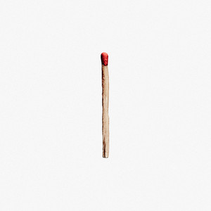

Disclaimer
This playlist review is made for fun and not to be taken seriously, as reviewer has no talent, education or expertise in music area and also no common sense in general. Review for each song is a one-liner and represents pure impression without googling or lyrics' analysis

Download 3
-

4:00A.M - 4:00 A.M.
Taeko Onuki
The song feels like an attempt to recall boiling heat of summer amidst deadly cold winter -

Bloody Kisses (A Death in the Family)
Type O Negative
Sincere reflections about partially selfish nature of mourning -

The Funeral
Band of Horses
The funny-doomed mood of the song is unexpectedly optimistic as if giving you a slight chance for tomorrow -

The Killing Moon
Echo And The Bunnymen
The funny-doomed mood of the song is unexpectedly annoying as if you want protag to get his shit together -

不器用な男
Iori Kanzaki
A kind reminder that pain indeed is a sign of being alive -

Botanist - The Shape of He to Come
Hunter Hunter
Sounds kinda like Kafka's "The Metamorphosis" but also like rain idk -

You Tear the World in Two
Pale Saints
The noise somehow is really comfy and alien-like in terms of language sounding -

Der Vampyr(The Vampire): Overture
Performed by Markus Marquardt Regina Klepper Jonas Kaufmann Franz Hawlata Yoo-Chang Nah Anke Hoffmann Thomas Dewald Heinz Heidbuchel Kay Immer Franz Gerihsen Josef Otten Marietta Schwittay-Niedzwicki Dirk Schortemeier
Written by Heinrich August MarschnerIs it the fifth season? -

Silverwing
Jennie Tebler
A cute and gentle sound reminds of school choirs -
Lucky
Radiohead
The song seems to be good for dancing at night with a loved one -

Crescent
Brendan Perry
Something distant and maybe already dead, yet still beautiful and important for you, like a painting -

My Friend the Wind
Demis Roussos
Painfully romantic song with gypsy accent and a spirit of selebration after long waiting (or is it drunken family party, idk?) -

Good Morning World
BURNOUT SYNDROMES
The beginning is really annoying somehow, but the song overall is inspiring and friendly, like old school teacher, who you really respected -

Like a Stone
Audioslave
Is it slavery or freedom to gift your life to somebody? -

Vampyria
Siebenbürgen
It is something nature-like, like birds singing in the old and dark forest -

Teardrop
Massive Attack
Sounds a bit like medieval legend -

Break It Down Again
Tears for Fears
Makes you feel like you can be a superhero or anime character -
.jpg)
Decades (2007 Remaster)
Joy Division
Wow, the song is even sadder and more stuck than my inner thoughts -

Love Like Blood
Killing Joke
Gives me an urge to watch Bruce Lee movie -

Nights in White Satin (Days of Future Passed Live)
The Moody Blues
The melody and vocal are bumpy in a good way and light enough to be pleasant -

You'll Always Find Me In The Kitchen At Parties
Jona Lewie
Something that is ahead of its time, emotionlessness of a teenager -
.jpg)
After the Ordeal (2007 Stereo Mix)
Genesis
A song for walking, when you are too poor to get somewhere by public transport -

Deutschland
Rammstein
I really like Hoffmann, what a legend! -

Nobody
Mitski
Another good one for crying in the rain, simple and elegant, loved it! -
Washing Machine Heart
Mitski
I'd like to live inside this song but it's way too short -

Red
King Crimson
Heavy and disgusting breath of city, but you're too tired to notice it -
Mrii
Outer Space
Rock-n-roll is still alive here in this chequered notebook -

Fallen Angel feat. Aimee B
Mitsunori Ikeda
Man, what a cool disco vibe! -

Knives Out
Radiohead
Quoting some legends here: "desperate but not hopeless" -

Saddest smile
Lebanon Hanover
Try helping somebody, thats the only way of curing sadness that i know -

They Rode On
Watain
Great legend (i may only guess, cause the lyrics are difficult to catch, but the name is eloquent(this female vocal tho 0_0)) -

Du riechst so gut
Rammstein
The sawmill insets are quite wholesome -

TeddyLoid - Me!Me!Me! feat. Daoko
EternalGriever
Kinda orig and remix on itself, funny -

Pale Shelter
Tears For Fears/h5>
-